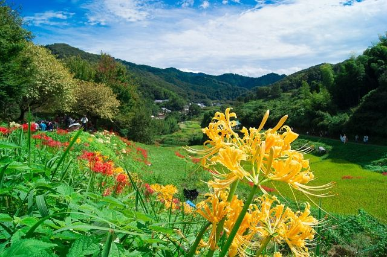
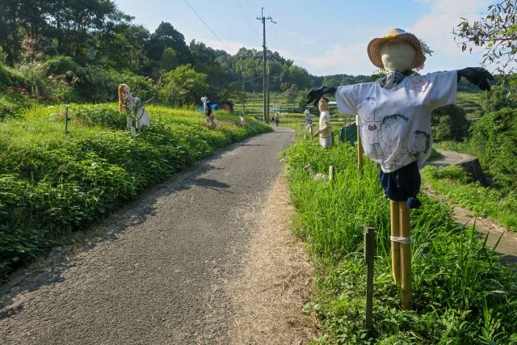

彼岸花が彩る秋の絶景
9月下旬頃には彼岸花が咲き誇り、黄金色の稲穂との美しいコントラストを見ることができます。

稲渕の棚田は、明日香村を代表する美しい里山風景が広がる景勝地です。 四季折々の自然が楽しめ、特に秋には黄金色の稲穂と彼岸花が織りなす景色が多くの人を魅了します。 のどかな農村風景をゆっくり散策できる人気スポットです。
| 営業時間 | 見学自由 |
|---|---|
| 定休日 | なし |
| 料金 | 無料 |
| 所要時間 | 約30～60分 |
| 駐車場 | 石舞台駐車場 （徒歩約25分・有料） |
| アクセス |
近鉄飛鳥駅からバス利用。 棚田周辺は坂道がありますので歩きやすい靴がおすすめです。 |
| 地図 | 地図はこちら |

9月下旬頃には彼岸花が咲き誇り、黄金色の稲穂との美しいコントラストを見ることができます。

稲渕の棚田では、毎年多くの案山子が展示される「案山子ロード」が人気です。 季節ごとのテーマに合わせた個性豊かな案山子が並び、棚田の風景とともに楽しめる明日香村ならではの風景です。
春は新緑、夏は青々とした田園風景、秋は黄金色の稲穂と彼岸花、冬は静かな里山の景色など、一年を通して異なる魅力があります。 のんびり散策しながら、明日香村ならではの原風景を楽しんでみてください。